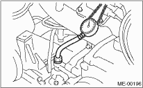

1. Disconnect the ground cable from the battery.

2. Remove the generator from the bracket. 
3. Disconnect the connector from oil pressure switch.
4. Remove the oil pressure switch from cylinder block.
5. Connect the oil pressure gauge to cylinder block.
6. Connect the battery ground cable to the battery.
7. Start the engine, and measure the oil pressure.

Oil pressure:
Standard (at 600 rpm)
98 kPa (1.0 kgf/cm2, 14 psi) or more
Standard (at 5,000 rpm)
294 kPa (3.0 kgf/cm2, 43 psi) or more
• If the oil pressure is out of standard values, check the oil pump, oil filter and lubrication line.
• If the oil pressure warning light is turned ON and oil pressure is in the specified range, replace the oil pressure switch.
NOTE:
Standard value is based on an engine oil temperature of 80°C (176°F).
8. After measuring the oil pressure, install the oil pressure switch.
Tightening torque:
25 N·m (2.5 kgf-m, 18.4 ft-lb)
9. Install the generator and V belt in the reverse order of removal, then adjust the play of the V belt.